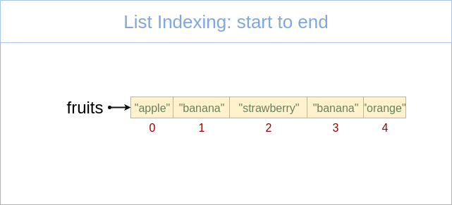

Keyboard shortcuts:
N/СпейсNext Slide
PPrevious Slide
OSlides Overview
ctrl+left clickZoom Element
If you want print version => add '
?print-pdf' at the end of slides URL (remove '#' fragment) and then print.
Like: https://wwwcourses.github.io/...CourseIntro.html?print-pdf
Python for Machine learning - Lecture 1, Part 3
Sequence Data Types. Common Sequence Operations.
Created for

Iva E. Popova, 2022,

Sequence Data Types - Overview
What is a Sequence?
A sequence in Python is a container, storing ordered collection of objects.

What is a Sequence?
- The position number of an item in a sequence is called index.
- Indexes starts counting from 0.
- All sequence data type in Python supports common sequence operations.
length, indexing, slicing, concatenation,.
repetition, membership test, min, max, count, index- Each sequence data type has also own methods for performing specific operations.
What is a Sequence?

What is a Sequence? - examples
# list:
fruits = ["apple", "banana", "strawberry", "banana", "orange"]
# tuple:
point3d = (4, 0, 3)
# range:
digits = range(0,10)
# string:
user_name="ada byron"
- The Sequence Data Types in Python are:
- Lists.
- Tuple.
- Range.
- Strings are also considered as a sequence.
Lists
Lists
What is a List?
- A list is a mutable (i.e. changeable) sequence of objects.
- we can add or delete elements to the list.
- Lists, being mutable sequence, can grow or shrink.
- There is no restriction of the type of the objects being in a list.
- The objects in a list can repeat many times.
- Lists are general-purpose data structure.
Create list by literal
- A List literal is denoted by a square brackets
- Items in the list are separated by comma
### create empty list:
empty_list = []
### create list of numbers:
users = [1,2,3,4,5]
### create list of mixed types:
user_data = ['Ada', 1992, 4.50]
### create list of lists
matrix = [
[1,2,3],
[4,5,6],
[7,8,9]
]
Retrieve item from list
item = list_name[index]
### create list:
fruits = ["apple", "banana", "strawberry", "banana", "orange"]
### retrieve the first item in the list:
item1 = fruits[0]
# apple
### retrieve third item in the list.
item3 = fruits[2]
# strawberry
# retrieve last item in the list:
itemN = fruits[-1]
# orange
We will discuss more indexing operation in Common Sequence Operations.
Change list item
list_name[index] = value
### create list:
fruits = ["apple", "banana", "strawberry"]
### Change second list item
fruits[1] = "plum"
print( fruits )
# ['apple', 'plum', 'strawberry']
### Change last list item
fruits[-1] = "orange"
print( fruits )
# ['apple', 'plum', 'orange']
Tuples
Tuples
What is a Tuple?
- A tuple is immutable (i.e. not changeble) sequence of data.
- once created a tuple can not be changed! No grow or shrink can happens.
- Useful for fixed data.
- Tuples are faster than lists and consumes less memory, but they are not general-purpose.
Create tuple from literal
- Tuple literal is denoted by parentheses
- Items in the tuple are separated by comma
- A single item tuple is created with trailing comma, like
(1,)
### create empty tuple:
empty = ()
print( empty )
# ()
### create tuple with one element - note the trailing comma!
# if you write t = (99), it will be an integer, not tuple
t = (99,)
print(t)
# (99,)
### create tuple of 3 elements:
point3d = (4, 0, 3)
print(point3d)
# (4, 0, 3)
Retrieve item from tuple
item = tuple_name[index]
# create a tuple
address = ('Bulgaria', 'Sofia', 'Nezabravka str', 14)
# retrieve tuple items
country = address[0]
town = address[1]
street = address[2]
street_num = address[3]
print(country, town, street, street_num)
# Bulgaria Sofia Nezabravka str 14
Examples
### create tuple with 3 elements:
ada_birth_date = (10, "December", 1815)
# retrieve tuple elements:
ada_birth_day = ada_birth_date[0]
ada_birth_month = ada_birth_date[1]
ada_birth_year = ada_birth_date[2]
print("Ada is born on {} {} in {}".format(ada_birth_month, ada_birth_day, ada_birth_year))
# Ada is born on December 10 in 1815
Change tuple? No Way!
- Tuples are immutable and can not be changed!
### change a tuple item:
address[0] = "France"
# TypeError: 'tuple' object does not support item assignment
Change tuple's mutable value? - yes, you can
- Tuple is immutable, but this does not means the we can not reassign it's mutable value, like list
t = ([1,2,3],)
# change third element in the list inside a tuple:
t[0][2] = 100
print(t)
#([1, 2, 100],)
Lists vs Tuples
Lists vs Tuples
- Performance
- Tuples requires less memory and are faster than lists
- Usage
- Use list, when you want to add/remove/change items in the list
- Use tuple, when you want to preserve your data from being changed. Or when you need to optimize your program.
Range Object
Range Object
What is a Range Object?
- The range type represents an immutable sequence of numbers.
- It's used to generate a number sequence, limited between pre-given start and stop integer values.
- It's typical use in Python is with
forloops. - The advantage of the range type over a regular list or tuple is that a range object will always take the same (small) amount of memory, as it only stores the formula by which the sequence of numbers will be generated
Syntax
range(stop)
range(start, stop[, step])
- start is the only required argument, and it denote that range of generated integers will end at stop - 1
- start is optional and if omitted defaults to 0
- step is optional and if omitted defaults to 1.
- start, stop and step must be integers!
- step can't be 0 (or "ValueError" is raised), but can be negative integer.
- If the given arguments did not form a sequence, an empty sequence will be returned.
- Reference: ranges @python3 docs
Examples
range(0,10)
# generates the sequence: [0, 1, 2, 3, 4, 5, 6, 7, 8, 9]
range(10)
# same as above
range(2, 10, 2)
# generates the sequence: [2, 4, 6, 8]
range(9, -1, -1)
# generates the sequence: [9, 8, 7, 6, 5, 4, 3, 2, 1, 0]
range(-3, 4)
# generates the sequence: [-3, -2, -1, 0, 1, 2, 3]
range(9, -1, 1)
# incorrect sequence formulae, will return empty sequence
Print range sequence
- Note, that when you just print a range object it will not return the sequence of numbers, but just the formula:
- If you want to print the generated sequence, you can use the builtin
list()ortuple()function: - But the most common way to use the range items is to loop over them:
r = range(0, 10, 2)
prin
# range(0, 10, 2)
r = range(0, 10, 2)
print(list(r))
# [0, 2, 4, 6, 8]
### iterate from 0 up to 10, step = 1 (default)
for i in range(10):
print(i, end=" ")
# 0 1 2 3 4 5 6 7 8 9
Range in for: example 1
### iterate from 10 up to -1, step = -1
for i in range(10,-1, -1):
print(i, end=" ")
# 10 9 8 7 6 5 4 3 2 1 0
Range in for: example 2
### iterate from 2 up to 10, step = 2
for i in range(2, 10, 2):
print(i, end=" ")
# 2 4 6 8
Range in for: example 3
### iterate from -10 up to 0, step = 2
for i in range(-10, 0, 2):
print(i, end=" ")
# -10 - 8 - 6 - 4 - 2
Common Sequence Operations
Common Sequence Operations
Next operation can be used on all sequence types, with the exception that range() objects can not be concatenated or repeated (but the sequences they produced can).
| Operation | Operator |
|---|---|
| Concatenation | + |
| Repetition | * |
| Membership Testing | in (not in) |
| Indexing | [i] |
| Slicing | [i:j] |
Concatenation +
- Concatenate two sequences and return the resulting sequence
- Only srings, lists and tuples support the concatenation operation.
- ranges can not be concatenated.
### Let's have two lists:
fruits = ["apple", "banana", "strawberry"]
numbers = [1,2,3]
### We can concatenate them:
concat_list = fruits + numbers
print(concat_list)
# ['apple', 'banana', 'strawberry', 1, 2, 3]
Concatenation - lists example
num_list = [1,2,3]
alpha_list = ["a", "b", "c"]
conc_list = num_list + alpha_list
print(conc_list)
# [1, 2, 3, 'a', 'b', 'c']
Note, that the result is a list!
Concatenation - tuples example
date1 = (31, "December", 2017)
date2 = (10, "Mart", 1999)
conc_date = date1 + date2
print(conc_date)
Note, that the result is a tuple!
Repetition *
- Repeats a sequence a given number of times and return the resulting sequence
- The multiplier must be an integer value!
- Only srings, lists and tuples support the repetition operation.
- ranges can not be repeated.
### Let's have a list:
numbers = [1, 2, 3]
### Repetition
rep_list = numbers * 3
print(rep_list)
# [1, 2, 3, 1, 2, 3, 1, 2, 3]
Repetition - example
num_list = [1, 2, 3]
alpha_list = ["a", "b", "c"]
print(num_list*3)
print(alpha_list*3)
# [1, 2, 3, 1, 2, 3, 1, 2, 3]
# ['a', 'b', 'c', 'a', 'b', 'c', 'a', 'b', 'c']
Membership Testing in, not in
- x in sequence
- returns True if x is member of sequence
- returns False if x is NOT member of sequence
- x not in sequence
- returns True if x is NOT member of sequence
- returns False if x is member of sequence
Membership Testing - list example
### Let's have two list:
fruits = ["apple", "banana", "strawberry"]
numbers = [1, 2, 3]
### Membership Testing (in):
print("banana" in fruits)
# True
print("banana" in numbers)
# False
### Membership Testing (not in):
print("banana" not in fruits)
# False
print("banana" not in numbers)
# True
Membership Testing - range example
# Let's have a range:
r = range(0,10)
print(3 in r)
# True
print(21 in r)
# False
Indexing from start to end
{kind=link}
- First sequence item is with index 0.
- Next sequence item indexes increments with 1
Indexing from start to end - example
### create list of numbers:
numbers = [1,2,3,4,5]
### index from start to end:
print(numbers[0],numbers[1],numbers[2],numbers[3],numbers[4])
# 1 2 3 4 5
Indexing from end to start

- Last list item is with index -1
- Next sequence item indexes decrements with 1
Indexing from end to start - example
### create list of numbers:
numbers = [1,2,3,4,5]
### index from end to start:
print(numbers[-1],numbers[-2],numbers[-3],numbers[-4],numbers[-5])
# 5 4 3 2 1
Indexing from end to start - use case
- The pythonic way to get the last element of a sequence is by using the
-1index, not bylen()-1
fruits = ["apple", "banana", "strawberry"]
# the pythonic way to print last element
print(fruits[-1])
# "strawberry"
# not pythonic (though it works):
print(fruits[len(fruits)-1])
# "strawberry"
Slicing - syntax
sliced = sequence[start:end:step]
- Slice a sequence from start up to end indexes with the given step
- start, end and step are optional!
- At least one column (
:) is required!
a[start:end] # get items with indexes from start through end-1
a[start:] # get items with indexes from start through the rest of the array
a[:end] # get items with indexes from the beginning through end-1
a[:] # a copy of the whole array
Reference: slice @python docs
Examples
>>> str = "abcdef"
>>> str[2:3]
'c'
>>> str[2:4]
'cd'
>>> str[-1:2:-1]
'fed'
>>> str[-1::-1]
'fedcba'
# same, but ugly:
>>> str[-1:-7:-1]
'fedcba'
>>> str[]
SyntaxError: invalid syntax
Examples
>>> str = "abcdef"
>>> str[:]
'abcdef'
>>> str[:3]
'abc'
>>> str[3:]
'def'
>>> str[::2]
'ace'
>>> str[::-1]
'fedcba'